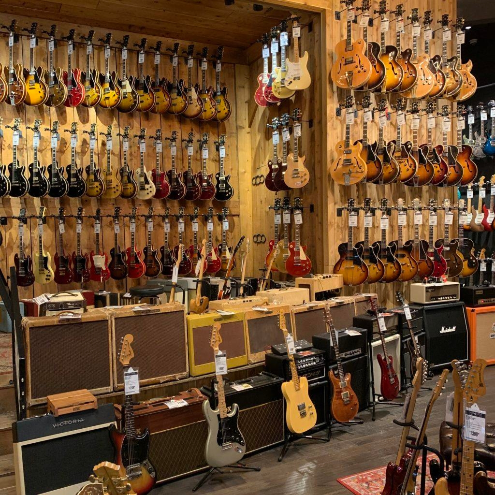

TANAKA GUITAR'S HISTORY
In 1985, our founder Michael Javier Briston really taking his love for
guitar into serious action. He wanted to sell high quality guitar yet
with affordable prices. Since he saw a lot of other guitar stores
selling high quality guitar with pricey prices. Not only for daily
uses of guitar, he also wants his store to be the one customer looking
for when they’re looking for antique guitar to collect.